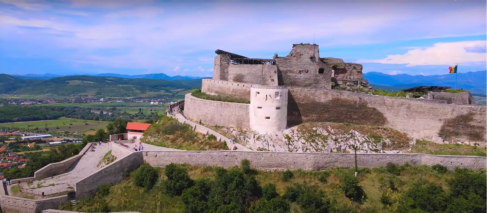
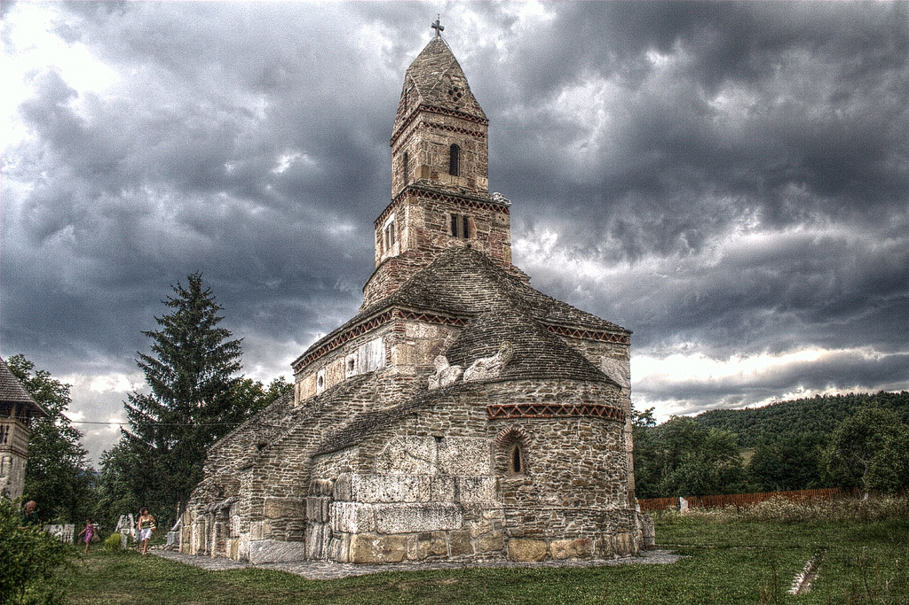
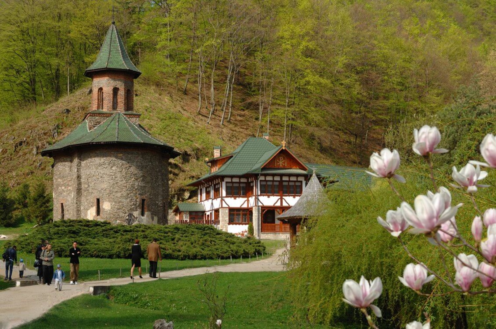
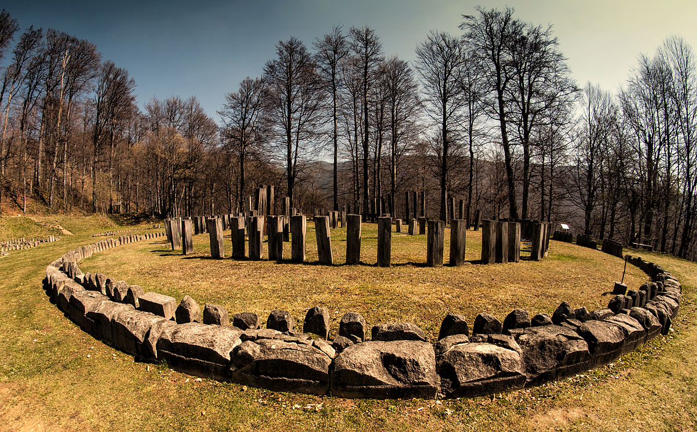

Castelul Corvinilor
Situata pe Dealul cetatii, la 371m altitudine, rezervatie naturala din 1988; A fost construita pe urmele unei fortificatii daco-romane in jurul anului 1250 cu rol de aparare; accesul se poate face pe jos sau cu telecabina. Telecabina este singurul ascensor inclinat din Romania. Din punct de vedere al lungimii 278 metri si a diferentei de nivel 158 metri este primul din Europa.
Pana in 1687 cand a fost ocupata a doua oara de trupele austriece. Cetatea a fost proprietatea familiei Hunedorestilor, Francisc Gesthy si principilor Transilvaniei. Aceasta era asediata deseori de iobagi, culminand cu asediul din timpul rascoalei din 1784 condusa de Horia, Closca si Crisan. In 1817 este restaurata de imparatul Francisc I. In timpul revolutiei de la 1848, cetatea este ocupata de o garnizoana de soldati austrieci. Fiind distrusa de o explozie a depozitului de munitie.
In decursul anilor cetatea a suferit mai multe reparatii si transformari. Ultima restaurare incepand in 2005 dar neterminata nici in prezent din lipsa de fonduri. Cetatea poate fi vizitata in orice anotimp. Merita efortul de a o vizita deoarece panorama este deosebita.
In apropiere de Hateg, fiind cea mai veche biserica din Ro in care slujbele se tin neintrerupt de 7 secole. Nicolae Iorga a numit-o ,,fara pereche in toata romanimea”, si pe buna dreptate si-a castigat denumirea. Datorita particularitatilor sale deosebite si unice, biserica pare a fi cel mai ciudat edificiu din Tara Hategului. Constructia este ridicata din piatra provenind de la Ulpia Traiana Sarmisegetuza.
Biserica de la Densus este obiectul multor controverseale cercetatorilor si oamenilor de stiinta. Unii sunt de parere ca ar fi mausoleul in care ar fi fost incinerat generalul roman care a fost ucis de daci.
Parerile din urma sunt sustinute prin prezenta unui element total neobisnuit pentru o biserica ortodoxa: altarul de aici nu este construit pe partea de est. Altii spun ca ar fi un templu roman crestinizat, fiind si prima biserica de pe teritoriul Daciei stravechi. Hramul Bisericii din Densus este in ziua Sfantului Ierarh Nicolae, pe 6 decembrie.
Originea in secolul XIV, ctitorita pe rand de Sf Nicodim, Domnita Zamfira si Parintele Arsenie Boca(„Sfantul Ardealului”). Manastirea Prislop se afla in Tara Hategului, la 10 kilometri de orasul Hateg. In secolul al XVII-lea, in apropiere de biserica, un calugar pe nume Ioan si-a sapat o chilie in stanca deasupra paraului care trece prin actuala curte a manastirii.
Sihastrul, despre care se spune ca a fost ucis de doi vanatori, a fost canonizat in anul 1992, ca sfantul Ioan de la Prislop. In 1948, Arsenie Boca a devenit staretul manastirii. Tot el fiind cel care a organizat cele mai ample lucrari de restaurare a monumentului. Prislop a devenit ulterior o manastire de maici. Arsenie Boca a ramas ca duhovnic pana in 1959, cand comunistii au risipit obstea si i-au stabilit parintelui domiciliul fortat la Bucuresti.
Situata in satul Gradistea Muncelului, muntii Orastiei. Cele sase fortarete dacice pentru aparare si protectie impotriva cuceririi romane. Sarmizegetusa Regia, Luncani – Piatra Rosie, Costesti – Blidaru, Costesti – Cetatuie, Capalna si Banita si fac acum parte din patrimoniul cultural mondial UNESCO.
A fost capitala Daciei preromane; este cea mai mare dintre fortificatiile dacice, aflata pe varful unei stanci, la 1.200 de metri inaltime, fortareata a fost centrul strategic al sistemului defensiv dac. Sarmizegetusa Regia este cel mai vechi si cel mai important monument pe care romanii il au in acest moment. In acest moment, din intregul oras (intins pe 14-17 hectare) este descoperit doar 5%. Pana acum nu a fost posibila descoperirea a mai mult din cauza ca Sarmizegetusa Regia este ingropata sub rezervatia naturala Gradistea Muncelului – Cioclovina. [sursă]
